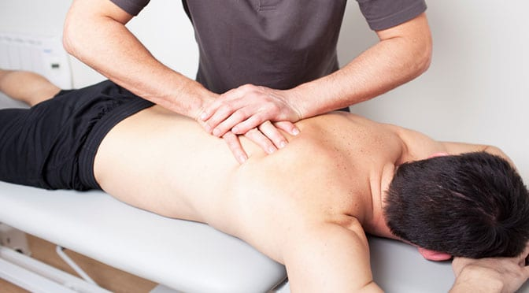

Sports Massage is a type of Manual Therapy. Muscles and other soft tissues like ligaments and tendons are manually manipulated in order to remove pain and tension, release stress, increase blood flow and support tissue repair. Sports Massage uses firm pressure and targets specific areas, impacting even the deep layers of the muscles. This enables a therapeutic effect and sustainable improvement of the respective condition. With regular use of Sports Massage the body will become more resilient to stress and strains and less vulnerable to injuries while athletic performance can be improved.
While Sports Massage is the term labeling the technique, Remedial Massage is the application of the technique in order to heal any kind of pain, discomfort, injury or dysfunction of the soft tissues.
Sports and Remedial Massage is a 100% natural way of healing, without requiring drugs, chemicals or technical appliances, it is completely free of side effects, sustainable and ecological.

Who will benefit from Sports Massage?
Despite what the name might suggest everyone can benefit from Sports Massage. Not only highly efficient for athletes and people who are physically active, it is also for individuals with a physically challenging occupation, those carrying out repetitive movements or people who are inactive, sitting at a desk all day. Painful tension, shortened muscles and ligaments, stiffness, decreased range of movement, lack of flexibility and poor circulation are often a result of these routines, which can build up over time and lead to serious long term issues like bad posture, chronic pain or damage of the muscle if left untreated. Sports and Remedial massage helps to alleviate or eliminate the negative impact of these conditions and prevent long term damage.
Get relief from
- Back pain
- Neck and shoulder pain
- Headaches
- Discomfort and tightness, e.g. from deskwork
- Repetitive Strain Injury
- Muscle soreness
- Chronic pain
- Postural issues
- Stress and anxiety
- Strained ligaments
- Post-exercise tightness
- Injuries
- Stiffness
- Decreased range of movement
- Lack of flexibility
- Sprained ankle
- Shortened muscles and ligaments